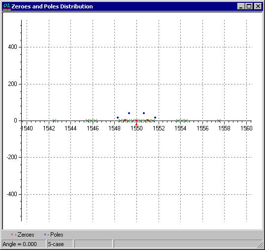

Zeroes and Poles
Zeroes and Poles
Navigation: OptiLayer Menu Commands > Analysis Menu >
Zeroes and Poles
` <idh_refractive_index_evaluatio.html>`__ ` <idh_menu_analysis.html>`__ ` <zeroes_and_poles_setup.html>`__
This is one of the advanced features of OptiLayer software. It enables the identification of zeros and poles of the amplitude reflection coefficient in the complex wavenumber plane. The locations of zeros and poles in this plane are tightly connected with the phase properties of multilayers.
For more information on this subject, it is recommended to consult the paper:
A. V. Tikhonravov, P. W. Baumeister, and K. V. Popov, “Phase properties of multilayers,” Appl. Opt. 36, 4382-4392 (1997)http://www.opticsinfobase.org/abstract.cfm?URI=ao-36-19-4382
We also recommend consulting the book:
“Optical Filter Design and Analysis” by C.K. Madsen and J.H. Zhao (John Wiley & Sons, N.Y., 1999).

Zeroes of the amplitude reflection coefficient are shown in red, while poles are shown in blue. It is convenient to use the right-click local menu to adjust frequently used settings. The Zeroes and Poles Setup dialog can be used for setting limits and other options. It can be invoked using the Options… menu item from the local right-click menu. Poles of the amplitude reflection coefficient are located only in the upper half-plane; this statement can be strictly proven. Zeroes of the amplitude reflection coefficient can be located in both the upper and lower half-planes. When the Thorough Search option is on, the internal mathematical algorithm performs more attempts to search for zeroes and poles; such a mode requires more time to complete calculations. If some area is suspected of having zeroes or poles, but nothing is displayed, it is possible to initiate additional search attempts. Just click with the mouse at some point in the window; this point will be used as a starting position for the search process. The process of such an additional search will be illustrated with blinking dots on the window.